ثقل الساقين: متى تستشير الطبيب؟
تورّم في المساء، تشنّجات ليلية، حكّة، أوردة تكبر تدريجياً: العلامات التي تستوجب فحص دوبلر دون تأخير.
تحدّث عنه في الاستشارةأخصائي طب الأوعية والدوالي
طبيب أخصائي في أمراض الأوعية الدموية بصفاقس
تشخيص دقيق وعلاج لأمراض الأوردة والشرايين.
أمراض الأوعية · الأوردة · دوبلر
الطبيب المعالج
منهج يقوم على الإنصات، والتصوير الدقيق، وعلاج مُصمَّم لكل مريض على حدة.
أخصائي طب الأوعية والدوالي طبيب أخصائي في أمراض الأوعية الدموية
طبيب مختص في طب الأوعية الدموية
الدكتور رشاد حمزة أخصائي طب الأوعية والدوالي بصفاقس. يشمل عمله الدوالي والأوردة والشرايين: التشخيص بالدوبلر ثم العلاج، غالباً دون جراحة.
التشخيص والعلاج في المكان نفسه: دوبلر وتنظير الشعيرات للتقييم، ثم تصليب بالرغوة أو ليزر داخل الوريد أو ترددات راديوية أو استئصال وريدي حسب الوريد المصاب. تُجرى الإجراءات في العيادة تحت تخدير موضعي مع عودة سريعة إلى النشاط. العيادة متعاقدة مع الكنام.
من التشخيص إلى العلاج: مسار وعائي كامل في مكان واحد. انقر على خدمة لترى في ماذا تتمثّل.
أخذ السيرة المرضية، فحص سريري كامل وتقييم الخطر الوعائي، مع خطة علاجية مشروحة وتُسلَّم كتابةً.
تقييم شرايين وأوردة الأطراف والشريان الأبهر والشرايين السباتية. فحص غير مؤلم، بدون حقن، ونتيجة فورية.
علاج بالحقن (سائل أو رغوة موجَّهة بالدوبلر) للدوالي والشعيرات الدموية. جلسات قصيرة دون توقّف عن العمل.
إغلاق حراري للأوردة الصافنة المريضة كبديل عن الجراحة: تخدير موضعي، دون مبيت، والمشي مباشرة بعد الإجراء.
ثقل الساقين، التورّم، التشنّجات الليلية: تقييم الدورة الوريدية، جوارب ضاغطة مناسبة، ومتابعة منتظمة.
تشخيص عاجل للتخثّر الوريدي العميق، بدء العلاج المضاد للتخثّر ومراقبته، والوقاية من الانتكاس.
الألم عند المشي، قياس مؤشر الضغط الكاحلي العضدي، الكشف عن التصلّب العصيدي والتوجيه لإعادة التوعية عند الحاجة.
ضغط هوائي متقطّع وجوارب ضاغطة على المقاس لثقل الساقين والتورّم وللحفاظ على نتائج العلاج.
تحديد سبب الجرح، بروتوكول واضح للضمادات، العلاج الضاغط، ومعالجة السبب الوريدي أو الشرياني.
إزالة الشعيرات الدموية والأوعية الصغيرة الظاهرة في الساقين والوجه بالليزر الجلدي أو التصليب الدقيق.
مكتبة الفيديو
حوارات كاملة مع الدكتور رشاد حمزة حول مرض الدوالي وأعراضه وعلاجاته.
فيديوهات منشورة على قناة Med.tn ومُدمجة وفق إذن الإدماج من ناشرها. هي للتوعية فقط ولا تُغني عن استشارة الطبيب.
قد تتساءل
أجوبة لأكثر الأسئلة تكراراً في عيادة أمراض الأوعية الدموية.
هو الطبيب الأخصائي بالأوعية: الشرايين والأوردة والأوعية اللمفية. يشخّص ويعالج الدوالي والتخثّر وأمراض الشرايين والوذمة اللمفية والتقرّحات، ويُجري فحص الدوبلر بنفسه.
هي أوردة متوسّعة وملتوية تظهر تحت الجلد، غالباً في الساقين. تضعف الصمّامات التي تمنع رجوع الدم إلى الأسفل، فيركد الدم ويتمدّد الوريد. قد تسبّب ثقلاً في الساقين أو تورّماً أو تشنّجات، وتزداد سوءاً مع الوقت دون علاج.
الفحص غير مؤلم تماماً وبدون أشعة: مجسّ وهلام دافئ على الجلد. لا حقن ولا صيام لفحص الأطراف السفلية. احتسب من 20 إلى 30 دقيقة، والبس ثياباً سهلة الخلع.
بحسب الوريد المصاب: التصليب بالرغوة الموجَّهة بالدوبلر، الليزر داخل الوريد، الترددات الراديوية، الصمغ الوريدي، أو الجراحة في حالات أقل. معظمها يُجرى في العيادة تحت تخدير موضعي مع المشي مباشرة بعده.
عندما يصبح الإزعاج يومياً: تورّم في المساء، تشنّجات ليلية، حكّة، أوردة ظاهرة تكبر تدريجياً، أو تغيّر لون الجلد حول الكاحل. كلما كان التقييم أبكر كان العلاج أبسط.
الإبرة شبيهة بسحب الدم ولا تحتاج تخديراً. في المعدّل من جلستين إلى أربع جلسات تفصل بينها أسابيع، حسب انتشار الدوالي. وتُلبَس الجوارب الضاغطة أياماً قليلة بعد كل جلسة.
العلاج الضاغط هو أساس علاج الأوردة: يخفّف الأعراض ويمنع المضاعفات. تُحدَّد الدرجة والمدّة بعد فحص الدوبلر — أياماً قليلة بعد الإجراء، أو بشكل يومي في القصور الوريدي المتقدّم.
ألم في بطّة الساق مع تصلّبها وسخونتها وتورّمها في جهة واحدة، خصوصاً بعد فترة سكون أو سفر طويل أو عملية جراحية. وفي حال ضيق نفس مفاجئ أو ألم في الصدر فالأمر طارئ: اتصل بالإسعاف فوراً.
لا، بل الرياضة مُستحسنة: المشي والسباحة والدراجة تُنشّط مضخة عضلة الساق. ويُنصح بالتقليل من الوقوف الطويل والحرارة الشديدة وحمل الأثقال والرياضات عالية الاصطدام إذا كانت الدوالي كبيرة.
أحضِر وصفاتك الحالية وفحوصك السابقة (الدوبلر، التحاليل) وقائمة أدوية تسييل الدم إن وُجدت، واحضر دون كريمات على الساقين. يُرجى الحضور 10 دقائق قبل الموعد.
لم تجد سؤالك في القائمة؟
اسأل الطبيبالعيادة بالصور
محيط هادئ، تجهيزات متكاملة، وإجراءات تُنفَّذ في المكان.
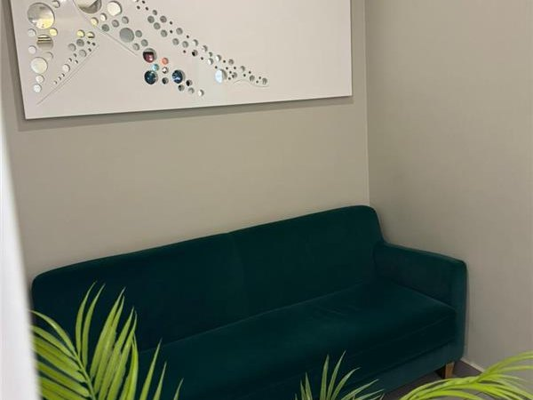
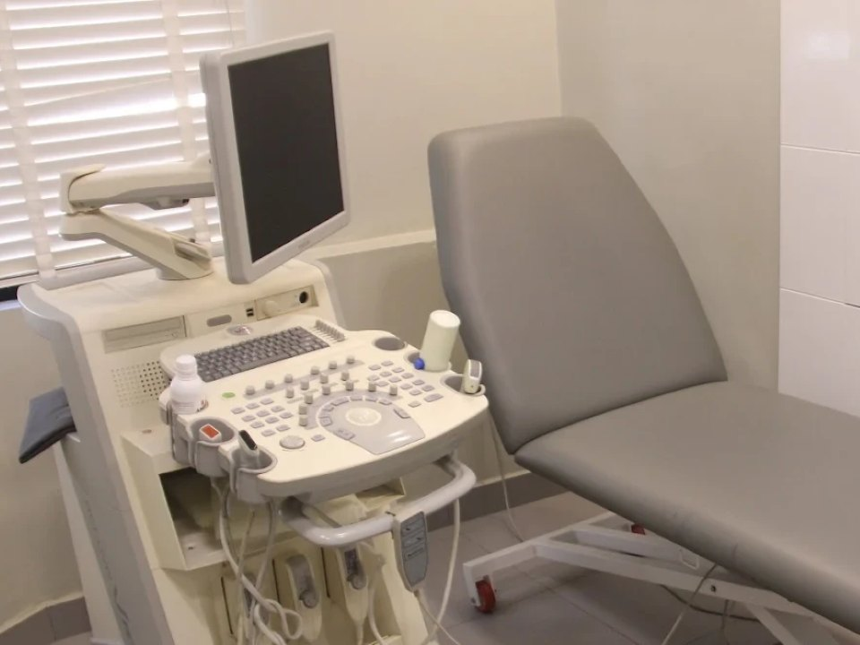
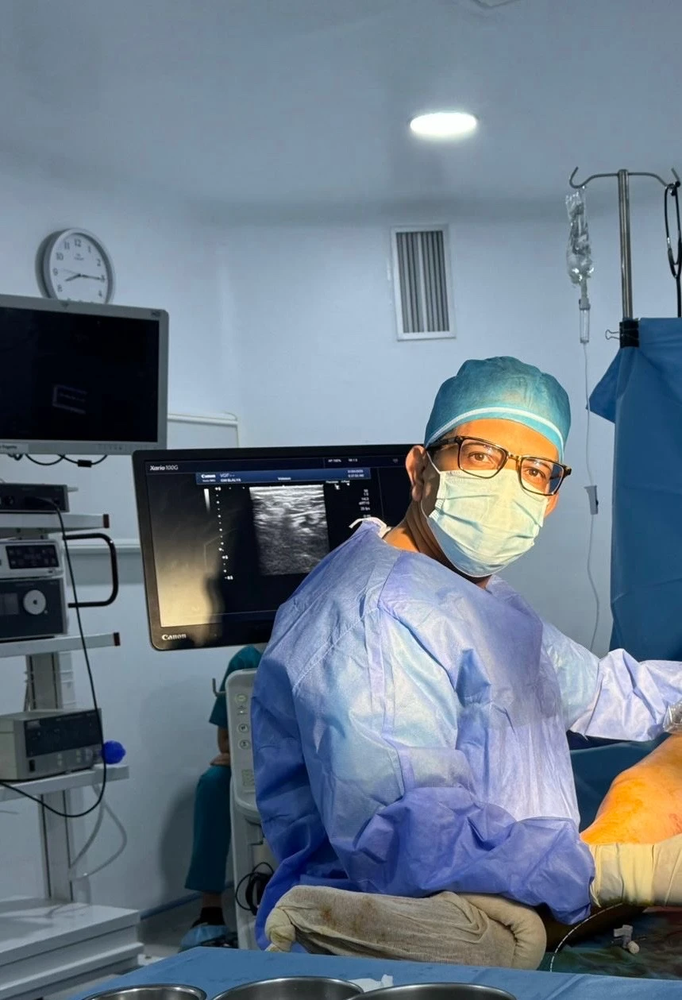
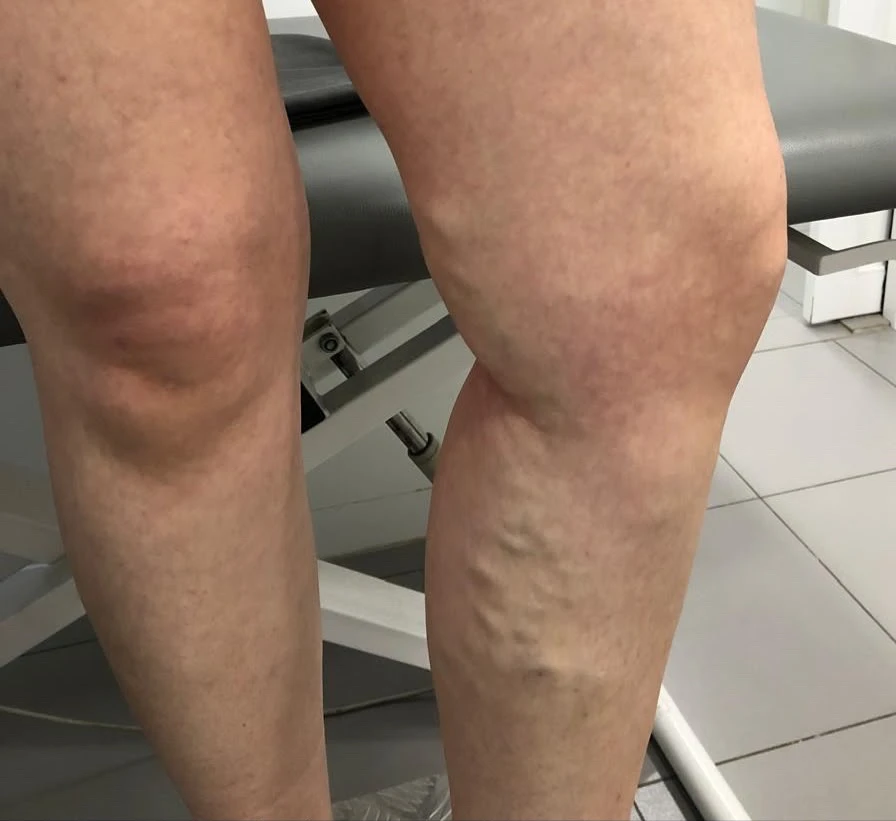
قبل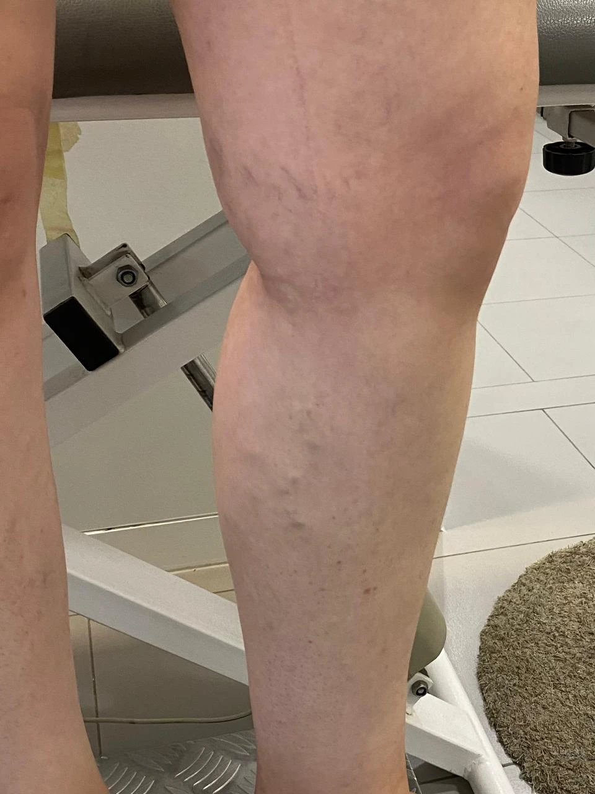
بعد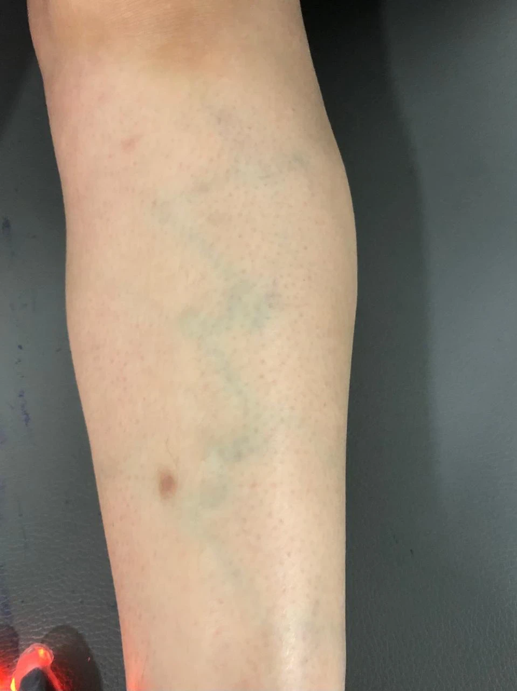
قبل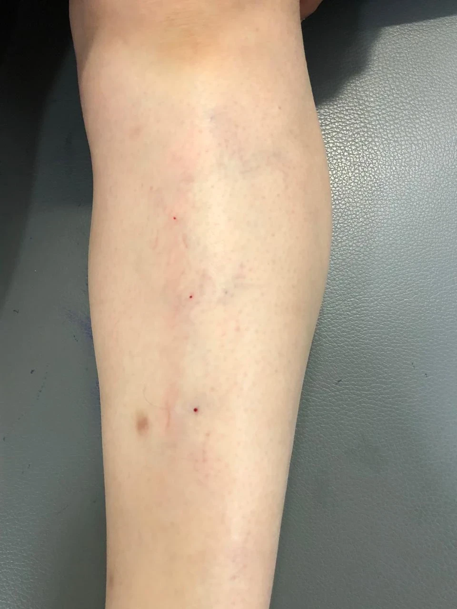
بعد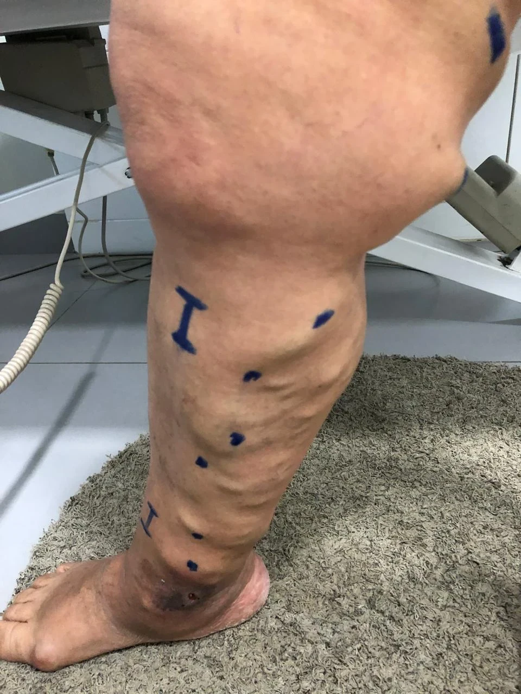
قبل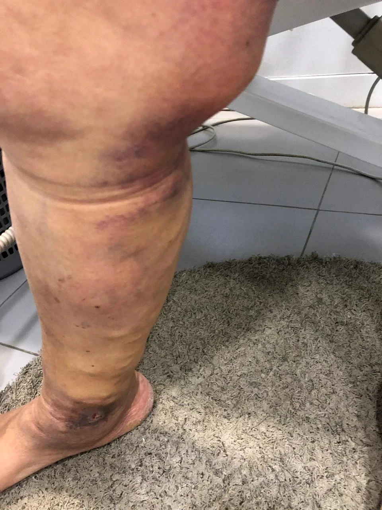
بعدصور حقيقية قبل العلاج وبعده. تختلف النتائج حسب الشخص ومرحلة المرض والالتزام بالعلاج.
النتائج
ما يُغيّره علاج مناسب. اسحب المؤشّر في وسط كل صورة للمقارنة.
اختفاء مسارات الدوالي والتكتّلات الوريدية بعد إغلاق الوريد الصافن المرتجع وتصليب فروعه.
تلاشي شبكة الأوردة الدقيقة بعد عدة جلسات تصليب، دون توقّف عن النشاط اليومي.
شفاء كامل بعد ضغط مناسب ومعالجة السبب الوريدي؛ أمّا التصبّغ البنّي فيتراجع ببطء أكبر.
صور حقيقية قبل العلاج وبعده. تختلف النتائج حسب الشخص ومرحلة المرض والالتزام بالعلاج.
المدوّنة وورشات العمل
إرشادات بسيطة حول مرض الأوردة: متى تستشير، وماذا تفعل يومياً، وكيف تتجنّب المضاعفات.
نصائح عامة — استبدلها بمنشوراتك وورشاتك.
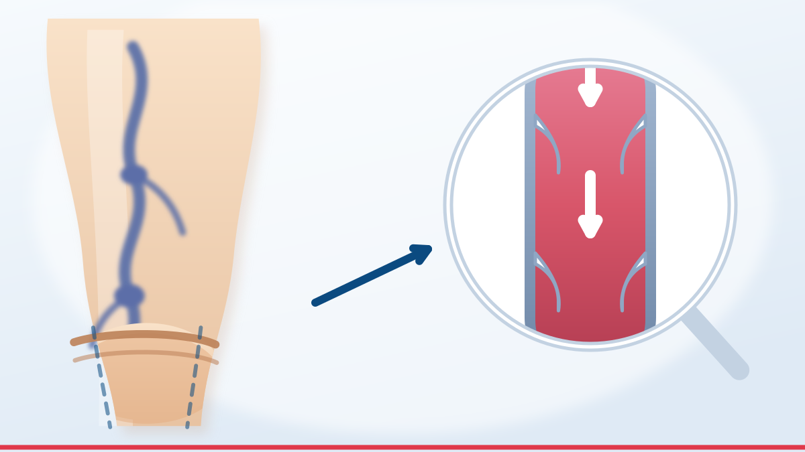
نصيحةتورّم في المساء، تشنّجات ليلية، حكّة، أوردة تكبر تدريجياً: العلامات التي تستوجب فحص دوبلر دون تأخير.
تحدّث عنه في الاستشارة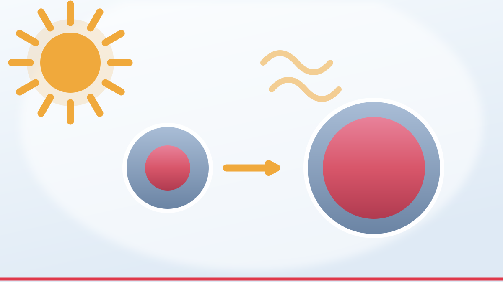
مقاللماذا توسّع الحرارة الأوردة، وما هي الإجراءات البسيطة التي تريح فعلاً: الاستحمام البارد، المشي، رفع الساقين، الجوارب الضاغطة.
تحدّث عنه في الاستشارة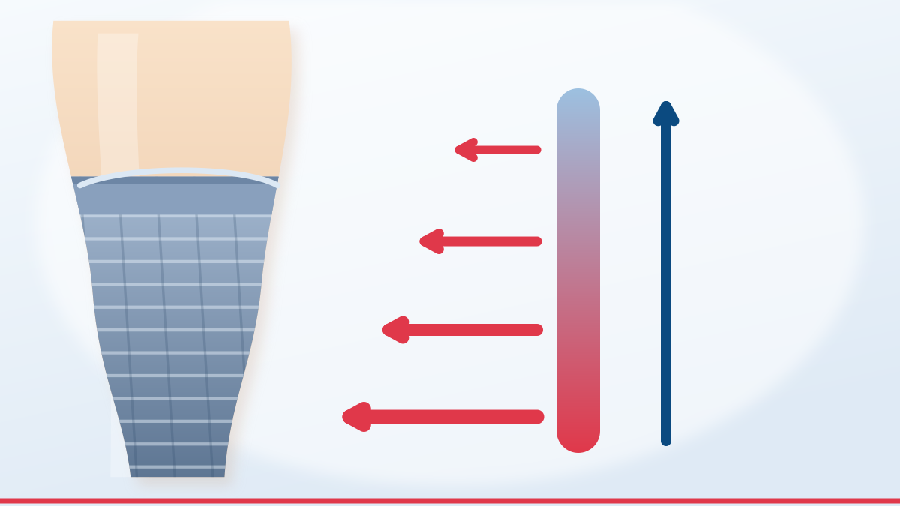
وقايةارتداؤها صباحاً قبل النهوض، التحقّق من المقاس، معرفة الجورب المُستهلك: تفاصيل تُحدث الفرق.
تحدّث عنه في الاستشارة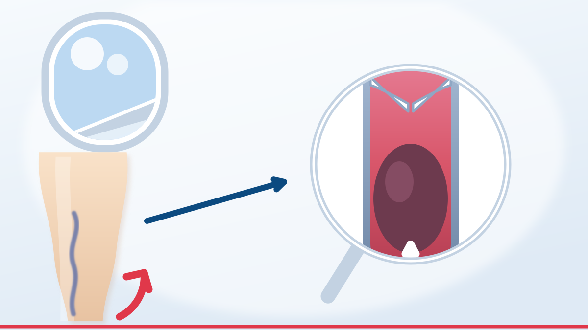
مقالمن هو المعرَّض فعلاً للخطر، وما يفيد حقاً (شرب الماء، الحركة، الجوارب)، وما لا فائدة منه.
تحدّث عنه في الاستشارةكيف تجدنا
بالموعد المسبق. يجيبك الاستقبال خلال ساعات العمل.
بداية طريق قرمدة، بجانب كارفور
عمارة المجد، الطابق الثالث، رقم 5
3000 صفاقس، تونس
| الاثنين – الجمعة | 08:30 – 18:00 |
|---|---|
| السبت | 08:30 – 16:00 |
| الأحد | مغلق |
ألم وتورّم في بطّة الساق، ضيق نفس مفاجئ، ألم في الصدر، أو ساق باردة وشاحبة: لا تنتظر الموعد واتصل بالإسعاف.